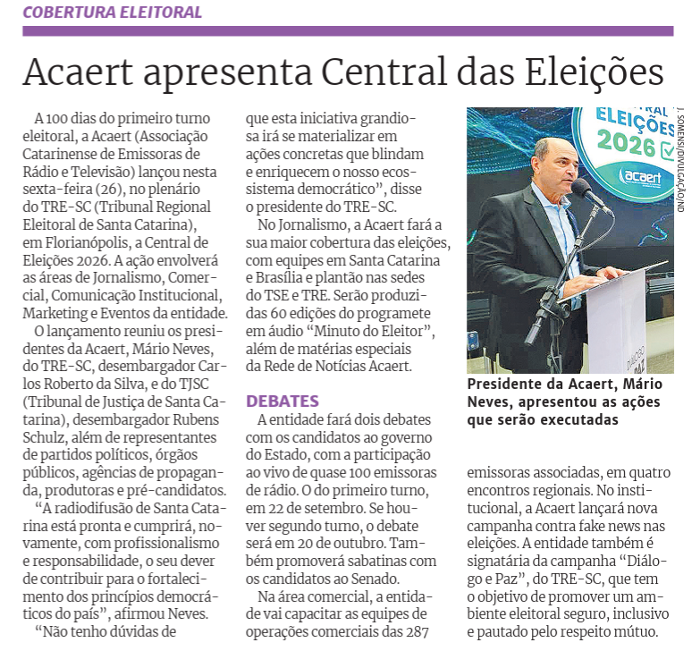
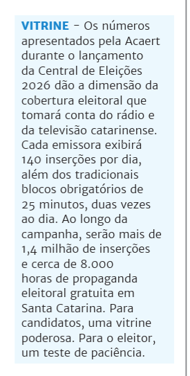

Clipagem ACAERT 2026
Lançamento da Central de Eleições
📺 TVs
NDTV - Cobertura das Eleições 2026 ganha reforço com Central da Acaert em SC
🔗 https://www.youtube.com/watch?v=hLh-U_ds5O4
Combate à desinformação é prioridade para entidades de SC
🔗 https://globoplay.globo.com/v/14734494/
🌐 Portais
NSC Total - Acaert lança Central de Eleições 2026 e anuncia maior cobertura eleitoral da história
🔗 https://www.nsctotal.com.br/...
Acontecendo Aqui - A maior mobilização da história durante as eleições 2026 é promessa da ACAERT
🔗 https://acontecendoaqui.com.br/...
Portal Making Of - ACAERT promoverá a maior mobilização da história durante as eleições 2026
🔗 https://portalmakingof.com.br/...
TudoRádio - ACAERT lança Central de Eleições 2026 e prepara maior cobertura eleitoral de sua história
🔗 https://tudoradio.com/...
✍️ Colunistas
Blog do Upiara – Acaert lança Central de Eleições 2026, com debates e nova campanha contra fake news
🔗 https://upiara.com.br/...
Roberto Azevedo - Vem aí temporada de debates no rádio e na TV
🔗 https://hnnoticias.com.br/...
Marcelo Lula - ACAERT lança Central de Eleições 2026 com maior cobertura jornalística da história da entidade
🔗 https://www.santacatarinaempauta.com.br/...
Blog Prisco - ACAERT apresenta a Central de Eleições 2026
🔗 https://www.blogdoprisco.com.br/...
🤝 Parceiros institucionais
Portal da Justiça Eleitoral - Com apoio do TRE-SC, ACAERT lança Central de Eleições 2026
🔗 https://www.tre-sc.jus.br/...
Alesc - Campanha ‘Central de Eleições 2026’ mobiliza TVs e rádios de SC para o fortalecimento da democracia
🔗 https://www.alesc.sc.gov.br/...
📎 Outros
Jornal Imagem - ACAERT lança Central de Eleições 2026 com maior cobertura jornalística da história da entidade
🔗 https://www.oimagem.com.br/...
XMNews - Acaert lança Central de Eleições 2026 para mobilizar rádios e TVs de SC
🔗 https://xmnews.com.br/...
Rádio Super 99,9FM - ACAERT lança Central de Eleições 2026 para ampliar cobertura jornalística em SC
🔗 https://radiosuper.com.br/...
Portal WH3.com.br - ACAERT lança Central de Eleições 2026 e anuncia maior cobertura eleitoral da história da entidade
🔗 https://wh3.com.br/...
Rede Peperi - ACAERT promoverá a maior mobilização da história durante as eleições 2026
🔗 https://peperi.com.br/...
Rede Souza de Comunicação - Emissoras de SC vão destinar mais de 20 mil horas à propaganda eleitoral durante as eleições
🔗 https://rscportal.com.br/...
📰 Jornais Impressos

Matéria do ND, edição de 27/06

Coluna do Paulo Rolemberg/ ND